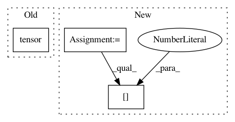

f4beaac559e00a3676d942dc7e8fea69efc01cfe,catalyst/metrics/tests/test_ndcg.py,,test_sample_ndcg,#,57
Before Change
outputs = torch.Tensor([y_pred])
targets = torch.Tensor([y_true])
true_ndcg_at2 = torch.tensor(1.0 / (1.0 + 1 / math.log2(3)))
comp_ndcg_at2 = metrics.ndcg(outputs, targets, top_k=[2])[0]
assert torch.isclose(true_ndcg_at2, comp_ndcg_at2)
After Change
y_pred1 = [0.5, 0.2, 0.1]
y_pred2 = [0.5, 0.2, 0.1]
y_true1 = [1.0, 0.0, 1.0]
y_true2 = [1.0, 0.0, 1.0]
outputs = torch.Tensor([y_pred1, y_pred2])
targets = torch.Tensor([y_true1, y_true2])
true_ndcg_at2 = 1.0 / (1.0 + 1 / math.log2(3))
comp_ndcg_at2 = metrics.ndcg(outputs, targets, topk=[2])[0]
assert np.isclose(true_ndcg_at2, comp_ndcg_at2)
In pattern: SUPERPATTERN
Frequency: 3
Non-data size: 3
Instances
Project Name: Scitator/catalyst
Commit Name: f4beaac559e00a3676d942dc7e8fea69efc01cfe
Time: 2020-11-30
Author: raveforlive@gmail.com
File Name: catalyst/metrics/tests/test_ndcg.py
Class Name:
Method Name: test_sample_ndcg
Project Name: rusty1s/pytorch_geometric
Commit Name: b2002a8ef80ecbecee09fd61b910c987648455c7
Time: 2020-08-26
Author: matthias.fey@tu-dortmund.de
File Name: torch_geometric/datasets/karate.py
Class Name: KarateClub
Method Name: __init__
Project Name: mariogeiger/se3cnn
Commit Name: d9c24dfc42d3af7859d98fa237d665e18e0f5c9a
Time: 2019-10-05
Author: lapchevsky.k@gmail.com
File Name: se3cnn/util/dataset/crystals.py
Class Name: CrystalCIF
Method Name: preprocess